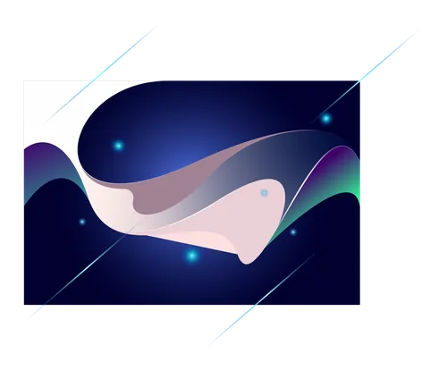

Mentoría para emprendedores 1:1: ordená tu experiencia y tu propuesta de valor
Seis semanas para ordenar lo que ya sabés hacer.

¿Qué es la mentoría 1:1 de G.A. Consultora?
Es un acompañamiento individual de seis semanas para emprendedores y profesionales independientes que ya tienen experiencia, pero la sienten dispersa. Trabajamos juntas para ordenarla, definir a qué cliente le servís y armar una propuesta de valor clara, con decisiones y próximos pasos concretos para tu negocio.
¿Para quién es esta mentoría?
Está pensada para emprendedores unipersonales y profesionales independientes —especialmente +40 y +50— que tienen años de trayectoria y conocimientos, pero necesitan estructura, claridad y una propuesta profesional para convertirlos en un negocio sostenible.
Emprender después de los 50 con la experiencia a favor
Empezar o reorientar un negocio a los 40, a los 50 o más no es empezar de cero: tu trayectoria ya es un activo. El desafío suele ser ordenarla y traducirla en una oferta que otras personas entiendan y elijan. En eso te acompaño.
Cómo trabajamos en seis semanas
Es un proceso de acompañamiento, no una fórmula genérica. En seis semanas avanzamos en cuatro frentes:
Ordenar tu experiencia y tus competencias
Ponemos sobre la mesa lo que sabés hacer, lo que hiciste y lo que te distingue, y lo organizamos para que deje de sentirse disperso.
Definir el cliente ideal de tu negocio
Definimos a quién le servís: qué necesita, qué problema tiene y cómo te encuentra. Con un cliente ideal claro, el resto de las decisiones se simplifica.
Armar la propuesta de valor de tu emprendimiento
Convertimos lo que sabés hacer en una propuesta concreta: qué ofrecés, para quién, qué resultado puede esperar esa persona y por qué elegirte.
Decidir tus próximos pasos
Cerramos con decisiones y un plan de acción que puedas aplicar de forma autónoma, sin depender de fórmulas ajenas.
Mentor, coach o consultor: ¿en qué se diferencian?
Un coach te ayuda a encontrar tus propias respuestas a través de preguntas; un consultor diagnostica y propone soluciones concretas; un mentor acompaña desde su experiencia. Esta mentoría toma lo mejor de cada mirada: diagnóstico, método y acompañamiento personalizado, siempre con foco en lo humano.
Preguntas frecuentes
¿Cuánto dura la mentoría?
Seis semanas de acompañamiento individual.
¿Qué es una propuesta de valor?
Es la explicación clara de qué problema resolvés, para quién y por qué tu forma de resolverlo es distinta o mejor. Es la base para definir tu oferta, tus precios y tu comunicación.
¿Cómo empiezo?
Con una conversación de descubrimiento gratuita, donde vemos tu situación y si esta mentoría es lo que necesitás.
Empecemos con una conversación de descubrimiento gratuita
Contame en qué punto estás y vemos juntas cómo ordenar lo que ya sabés hacer.
Solicitá una conversación de descubrimiento GRATISTransformar desde lo humano: la técnica es necesaria, pero no alcanza — detrás de cada negocio hay una historia y una identidad.